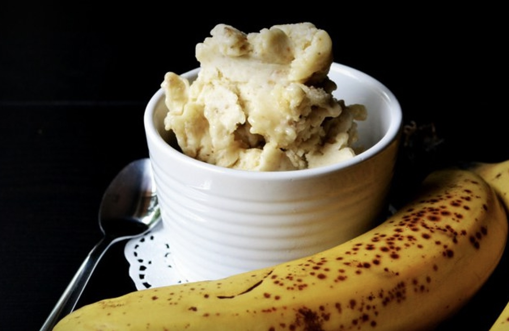

Main
Banana Ice Cream

Info:
- Serves: 4 people
- Preparation time: 5 mins
- Difficulty: Easy
Ingredients
- Four ripe bananas cut into chunks
- Three to four table spoons of milk
- Two tablespoons toasted flaky almonds
- Two tablespoons of ready-made toffee (or chocolate sauce)
Preparation
- Pop the banana chunks on a flat tray and cover well. Freeze for at least 1 hr, or until frozen through.
- When ready to eat throw the banana into a food processor and whizz until smooth with enough of the milk to achieve a creamy texture.
- Scoop into 4 bowls or glasses, then top with the sauce and nuts.